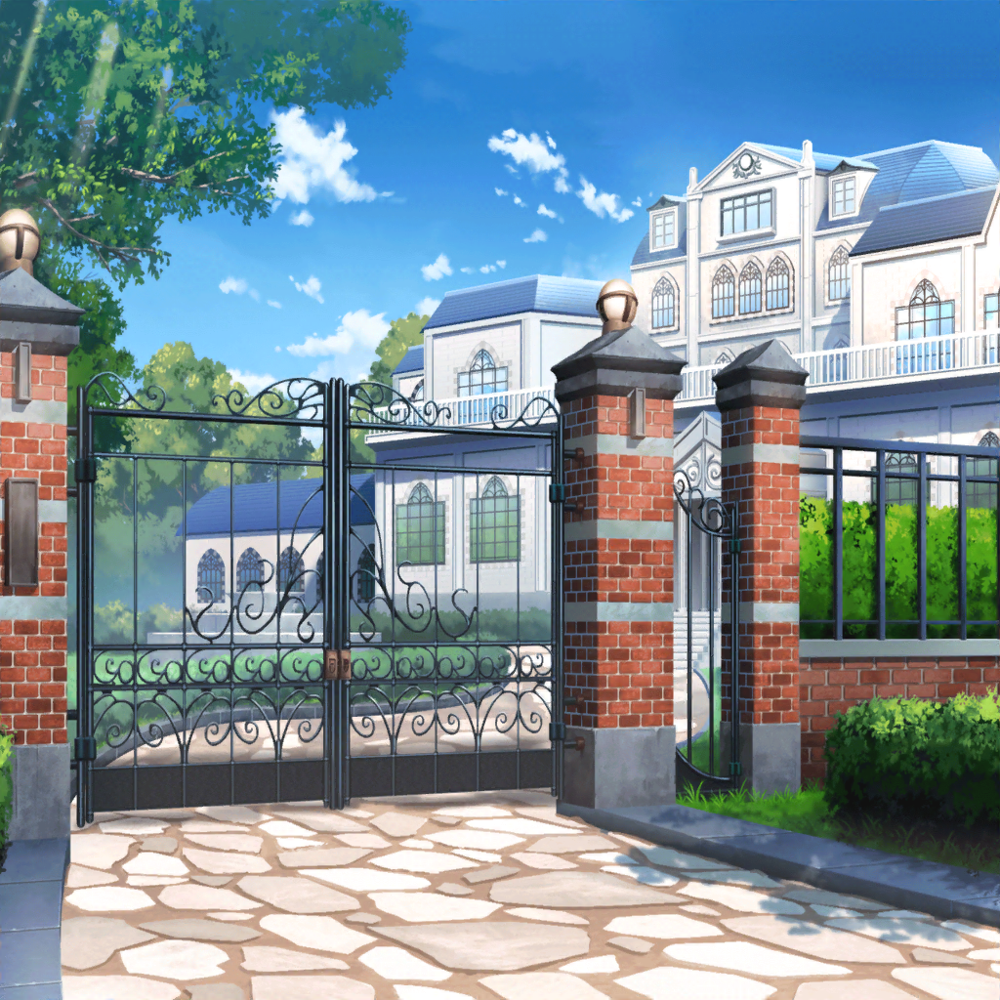

お花見当日
有咲
もしかして、早く着きすぎた？
……っていっても待ち合わせ時間まで１０分きってるし……
有咲
……これじゃまるで、私が一番楽しみにしてたみてーじゃん。
はあ……
りみ
あ、有咲ちゃんおはよー！
あ、あれ！？ 私、待ち合わせの時間間違えてたっけ？
有咲
いや、間違ってないよ。
……私達が早すぎただけ
りみ
そっか。よかった〜。
沙綾ちゃんとおたえちゃんも、もうすぐ来るって
有咲
りょーかい
沙綾
あれ？ 二人とも早いね！
もしかして有咲、楽しみすぎて早く来ちゃったとか？
有咲
はぁ！？ べ、別にそんなんじゃねーし！
待ち合わせの時間よりも早めに着いとくのなんか
ジョーシキだろ？
沙綾
はいはい、そーだね？
イヴ
おはようございます！
いい天気になってよかったですね！
イヴ
アリサさん、眉間にシワが寄っています！
大丈夫ですか？
イヴ
もしかして、気分が悪いとか……？
有咲
あ、いえ……別に、そういうわけでは……
お気遣いありがとうございます……おほほほ……
イヴ
それならよかったです！
イヴ
それにしても、アリサさんはとてもお淑やかですし、
大和撫子を絵に描いたような方ですよね〜。
桜が似合います！
りみ
う、うん……そ、そうだね
香澄
ご、ごめーーーーーーん！
遅れちゃったーーーーーーーっ！
有咲
か、香澄！ お、おまえっ！
イヴ
お、おまえ？
アリサ、さん……？
有咲
！？
有咲
……おまっ……おま……おま、んじゅう……
持ってきてくれた……かしら？
香澄
おまんじゅう？ そ、そんな約束したっけ？
おまんじゅうはないけど、お菓子はたくさん持ってきたよ！
有咲
そ、そうでしたか。
ありがとうございます。おほほほ……
香澄
有咲、なんか変だね？ ……ま、いっか。
……あれ？ まだこれだけ？ 他のみんなは？
りみ
みんなお花見で食べる料理作ってて、ちょっと遅れてるみたい。
私も今来たところだから。
香澄ちゃんはなんの料理作ってきたの？
香澄
私はお菓子をたくさん持ってきたっ！
料理は、そんなに得意じゃないから、これで許してほしいな。
えへへ……
たえ
あ、みんなもういる
香澄
あ、おたえ、おはよー！
たえ
途中で、この人達とも一緒になった
はぐみ
みんな、お待たせ〜！ じゃーん！
はぐみとみーくんも一緒でーす！
美咲
おはようございます。
私は特に『じゃーん』と出るテンションじゃないので、
普通に登場しました
香澄
えーっと……それじゃあ、これで全員……かな？
うん！ それじゃあ、こころんのおウチにレッツゴー！

香澄
私、もうここでお花見した～い！
今すぐにでも始めたいよ～！
はぐみ
いやいや、かーくん。
こころんのおウチは、きっとこんなものじゃないよ
香澄
ここよりすごいって……そんなこと、あり得るの？
はぐみ
まあまあ、楽しみにしててよ！

香澄
……ねえ、はぐ？ こころんのおウチってまだなの？
さっきから、ずっとなが～い塀沿いに歩いてるだけで……
だんだん私、眠くなって……
はぐみ
はいっ！ みなさん、お待ちかね！
やっと到着しましたー！
ここが、こころんのおウチでーす！
有咲
ここが？ あはは、冗談はやめてくださいよ〜。
ここ、このあたりで一番大きいって有名な豪邸じゃないですか
沙綾
あれ、ちょっと待って。
そういえば、こころの名字って、弦巻だよね？
りみ
表札……『弦巻』って書いてある……
有咲
じゃ、じゃあ、ここが本当に弦巻さん家……？
はぐみ
だから〜、さっきからそう言ってるじゃん！
ここが、こころん家だよー
沙綾
まさか、こころが弦巻家の一員だったなんて……
驚きだよ……
こころ
みんな、よく来てくれたわね！
どうぞ、入ってちょうだい！

弦巻家
香澄
……こ、これって……夢？
ひょっとして私、眠すぎて夢、見てるのかな？
目の前が……全部ピンク、なんだけど……！
香澄
……ちょっと、ほっぺたを……痛っ！
やっぱり……夢じゃ、ないよね？
こころ
みんな、どうぞ自由にして！
走り回るもよし、寝転がるもよし、バク転するもよし！
ここではすべてが自由よ！
こころ
あっちのテニスコートでは、
あとでバドミントン大会を開催するわ！
楽しみにしててね！
たえ
……あ、向こうに噴水がある
イヴ
すごい……！ こんなに大きい家は、
フィンランドでもめったにないですよ……！
有咲
つーか、ここどこだよっ！？
ありえねーだろ！？ 普通、ありえねーって！
有咲
……！？
有咲
（ま、まずい！ あまりにもスケールがデカすぎて、
思いっきりツッコんじゃったよ！ もし誰かに聞かれてたら……）
有咲
……
有咲
（……ふぅ。良かった……みんなこのスケールに圧倒されて、
誰にも聞かれてなかったみたいだな……）
こころ
それじゃあ、みんな！
用意をお願いするわ！
りみ
……え？
お屋敷から、黒服の人達がゾロゾロ出てきたけど……
い、いったい、なんなの～！？